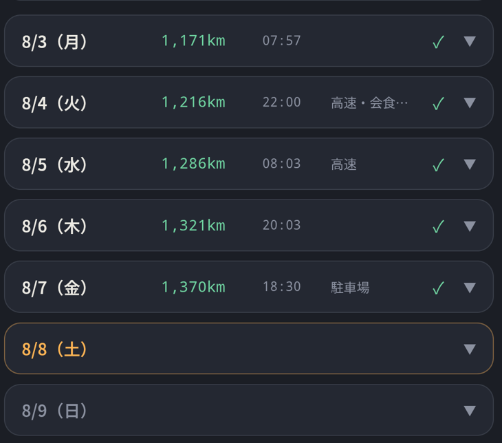
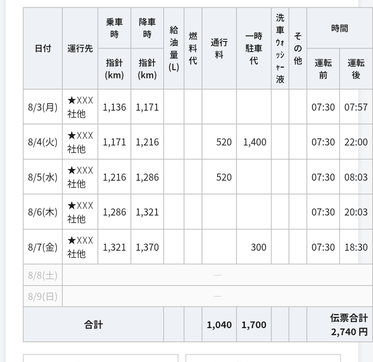

メタろぐ
「面倒だ」と感じた自分を、助ける仕組み
卒業制作｜AI-Driven School
1
机の引き出しに、
そっとしまって、帰った。
7月10日・営業全員に iPhone が配られた日
2
配られた iPhone で、できたこと
メールだけ。
社内のシステムは、覗けない。
アプリは、一つも入れられない。
3
私の会社
AIを導入しよう、なんて。
社内でささやく人すら、いない。
創業
125年の商社
社員550人
うち営業400人
管理職は今日も
紙にハンコ
4
週に一度、会社のパソコンで作る
車輌運転日報 兼 運行費用伝票
5
会社のパソコンでやることは、見て、写すだけ
10分
→
3分
車を降りた、その場で。メーターの数字を打つ。それだけ。
週末には、伝票とそっくり同じ形のレポートが、できあがっている。
6
「くそっ」
降りたときのメーターを、控えていなかった。
7
駐車場まで歩いて、見に行った
5分
数字、ひとつのために。
8
厄介なのは、時間そのものではなかった
いちばん忙しい年度末、チームの3人から、1ヶ月分たまった伝票が、それぞれ出てきた。
9
8月7日｜設計思想 発表
それまで
スマホの画面まで。
つながらないんだから、
これで十分だ。
→
仲間の一言のあと
会社のパソコンに、
完成版が届く。
やまきょうさん「最後は、日報の出力までできると、より良いですよね」
しょうたさん（ちゅーさんへ）「そこで止まらずに、どうしたら結果を受け取れるかを考え抜いているのが素晴らしい」
10
止まっていたのは、
会社じゃない。
私の思考でした。
11
STEP 1
ホーム画面から、普通のアプリのように開く
インストールは、要りません。
ただのWebページを、
ホーム画面に置いているだけ。
サーバーなし。
データベースなし。
運用コストは、0円。
12
STEP 2
車を降りた、その場で。メーターの数字を打つ

打つのは、数字だけ。10秒で終わる。
13
STEP 3
週末、ボタンをひとつ押して、自分あてに送る
レポートをまるごとURLに埋め込んで、メールで送る。
添付ファイルは、使いません。
14
STEP 4
会社のパソコンで、リンクを開く

合計も、走行距離も、計算済み。
あとは、見て、写すだけ。
15
効果について、正直に
10分
→
3分
ただしこれは、今のところ私ひとりの実測です。
営業400人で計算すれば、大きな数字は作れます。
でも今日は、そこを主役にしませんでした。
16
無理なのは会社じゃなくて、
そこで止まった思考かもしれません。
8月7日の私が、まさにそうでした。
17
皆さんは、たぶん気づかないうちに、
誰かの何かを変えています。
私を変えたのは、私に向けられた言葉ではありませんでした。
18
作ったのは、アプリではありませんでした。
「面倒だ」と感じた自分を、助ける仕組みです。
そしてその仕組みは、誰かに渡せます。
ありがとうございました。
19